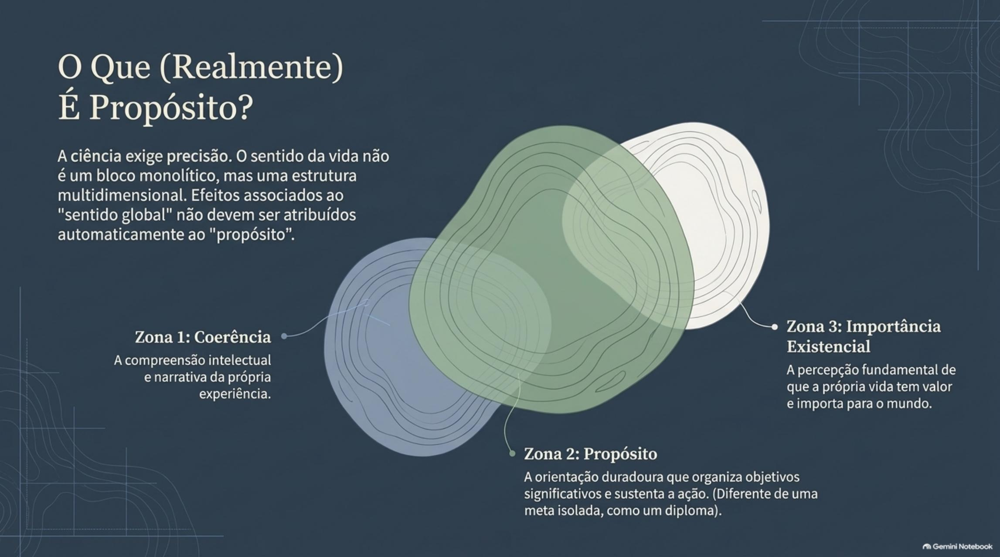
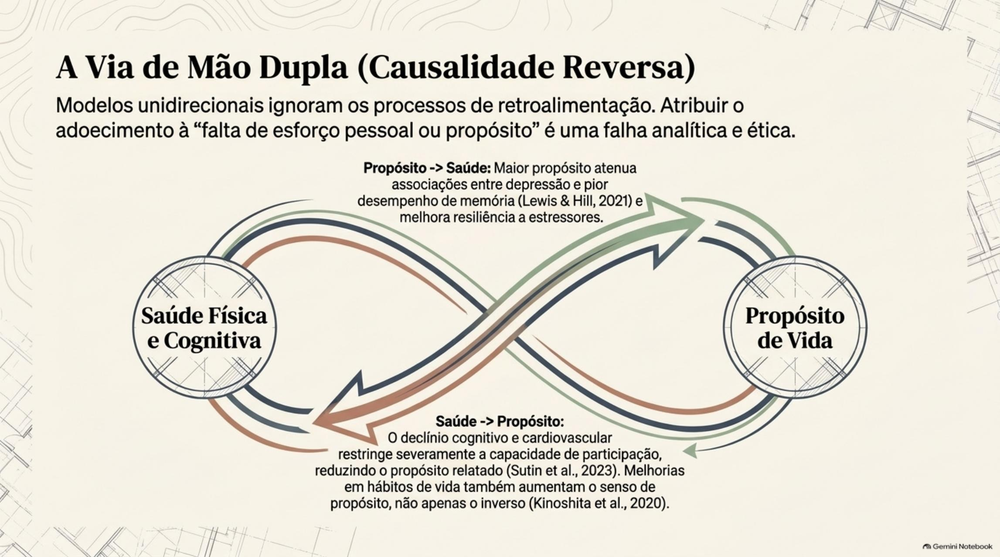
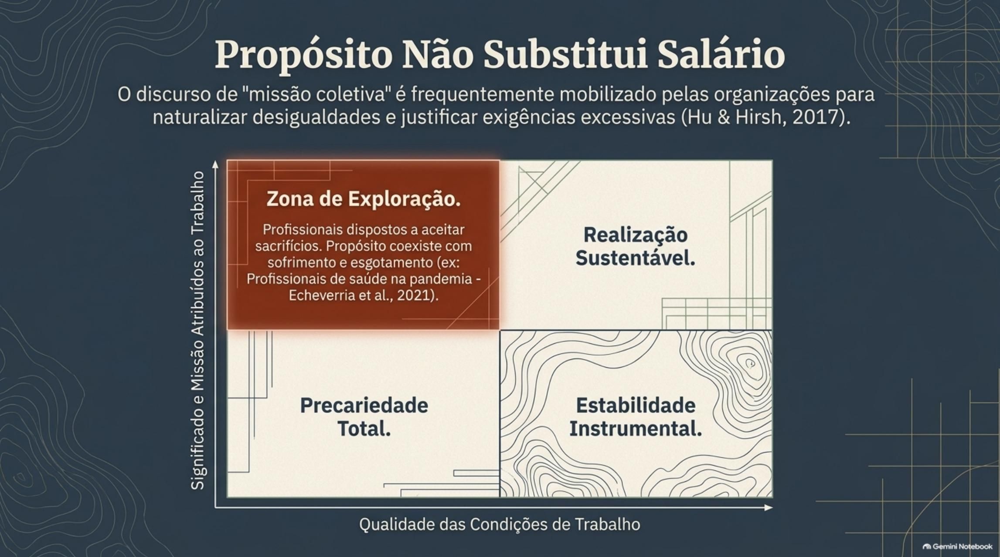
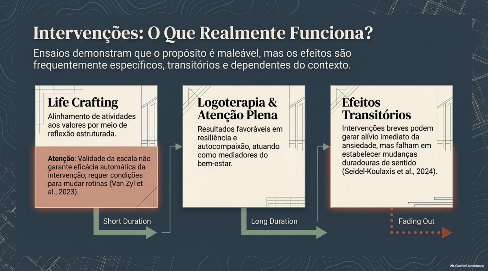
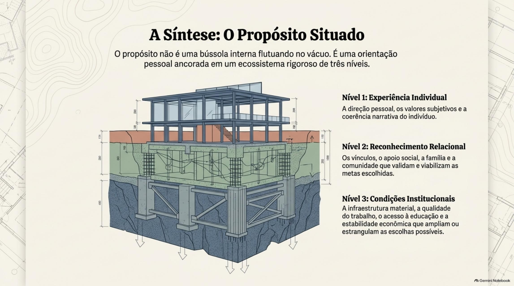

Do que trata o artigo
O propósito ocupa posição relevante na pesquisa sobre bem-estar, mas a diversidade de definições e o predomínio de estudos observacionais limitam sua conversão em recomendações universais. A busca estruturada foi feita no Europe PMC em 14 de setembro de 2026, com busca complementar no PubMed Central, privilegiando estudos longitudinais, revisões, validações de instrumentos e intervenções.
Abaixo, os objetivos do artigo e os tópicos centrais. Clique em cada tópico para ver a explicação e a reflexão que ele abre.
Objetivos do artigo
Objetivo principal
Examinar como o propósito de vida se articula ao longo do desenvolvimento humano, analisando suas relações com saúde, trabalho e condições sociais, de modo crítico e baseado em evidências publicadas.
Objetivos secundários
- Mapear as principais definições e instrumentos de medição de propósito e sentido de vida, destacando diferenças entre construtos.
- Revisar evidências sobre propósito no desenvolvimento, nas relações sociais, na saúde e no trabalho, sem assumir causalidade onde só há associação.
- Avaliar intervenções que buscam cultivar propósito, indicando limites e resultados não duradouros.
- Propor uma agenda de pesquisa para o Brasil e a América Latina, considerando desigualdades e a necessidade de validação em populações diversas.
Conceito e medição
Antes de prometer resultados, é preciso saber o que está sendo medido.

Uma direção duradoura que organiza objetivos significativos e sustenta o esforço para alcançá-los.
Não há definição única. Algumas concepções enfatizam metas pessoais; outras incluem pertencimento, espiritualidade, importância para os outros e capacidade de investir na realização de objetivos. A escolha da definição muda o que pode ser estudado e afirmado.
Antes de comparar duas pesquisas, é preciso verificar se ambas falam do mesmo fenômeno.
Sentido é mais amplo: inclui coerência, propósito e importância existencial.
A coerência é a capacidade de compreender a própria experiência; o propósito é a direção e os objetivos; a importância existencial é a percepção de que a vida tem valor. Em estudos sobre dor, a coerência mostrou associações próprias, independentes das outras dimensões.
Efeitos atribuídos ao sentido global não podem ser automaticamente creditados ao componente de propósito.
Propósito não é uma grande meta pronta a ser encontrada; organiza várias metas ao longo do tempo.
Uma meta é um resultado delimitado. O propósito escolhe e sustenta metas. Propostas como life crafting mostram que a direção pessoal pode ser construída com reflexão e ação sobre valores, competências e planos.
Direção pessoal se constrói em prática, não se revela como um destino já escrito.
A espiritualidade pode ser fonte de sentido, mas não é a única e não se relaciona de forma uniforme com o bem-estar.
Definir propósito como missão necessariamente espiritual exclui trajetórias seculares e confunde o conteúdo do propósito com sua estrutura psicológica.
A pesquisa deve permitir que cada pessoa reconheça suas próprias fontes de valor, sem impor origem religiosa.
Diferentes escalas capturam aspectos distintos do construto.
O Purpose in Life Test, o Life Engagement Test e subescalas de bem-estar psicológico medem coisas diferentes. No Meaning in Life Questionnaire, presença e busca de sentido são avaliadas separadamente e podem coexistir. No Brasil, adaptações para idosos (estudo FIBRA, 187 participantes, média de 83,8 anos, α = 0,628) têm limites claros de generalização.
A escolha da medida já é parte da definição do fenômeno: títulos parecidos não garantem conteúdos equivalentes.
Desenvolvimento e relações sociais
Propósito não nasce isolado: identidade, vínculos e recursos materiais participam.
Uma bússola em movimento (desenvolvimento humano)
O propósito não é um destino cristalizado, mas uma orientação adaptativa que responde às fases da vida e às relações pessoa-ambiente.
Articulado à construção da identidade. Não exige definição precoce isenta de ambivalência. A busca e a exploração são saudáveis (Krok, 2018).
Focado em vínculos de confiança, transições de papéis e inserção cultural. Organização de objetivos diante da realidade material.
Profundamente associado à conexão social e ao enfrentamento do declínio. A solidão é a maior ameaça ao propósito nesta fase (Neville et al., 2018).
O desenvolvimento saudável não exige uma definição precoce e definitiva de propósito.
Entre adolescentes tardios, a busca de sentido favorece o bem-estar quando coexiste com a presença de sentido. Explorar objetivos não é o oposto de mantê-los: revisar metas pode conviver com referências significativas.
O desenvolvimento saudável não exige definição precoce, definitiva e isenta de ambivalência.
Relações de apoio ajudam a construir e manter direções significativas.
Em 2.085 universitários chineses, apoio social, iniciativa de crescimento e autoeficácia acadêmica se associaram ao senso de propósito. Em outra amostra de 468 estudantes, o propósito mediou o efeito de pertencimento escolar e persistência sobre sintomas depressivos.
O foco se desloca de decisões puramente internas para experiências de apoio e oportunidades reconhecidas.
Significados estão ligados a família, comunidade e continuidade cultural.
Com 579 adolescentes de origens diversas nos Estados Unidos, identidade étnica, presença de sentido e ajustamento apareceram relacionados, com diferenças entre grupos.
Generalizar uma narrativa individualista de realização pode omitir significados ligados à família, à comunidade e à continuidade cultural.
Oportunidade desigual molda a possibilidade de ter e perseguir propósitos.
Em 17.634 adolescentes canadenses, a posição socioeconômica relativa se associou a sentido e propósito, com padrões distintos por gênero e desigualdade escolar.
O tema não se reduz à disposição de estabelecer metas: oportunidades desiguais precisam entrar nas hipóteses e nas interpretações.
Aposentar-se não significa perder necessariamente o propósito.
Em 1.330 trabalhadores e aposentados, o propósito se relacionou a saúde, apoio social, escolaridade e qualidade de vida, com fatores compartilhados e específicos. Lazer, aprendizagem e relações também sustentam significado.
Reorganizar objetivos exige condições concretas — e participação produtiva não equivale a emprego remunerado.
Crises alteram as relações entre pessoa e ambiente e testam a continuidade do sentido.
Rupturas de trabalho, educação e convívio mudam a possibilidade de manter direções. Em 1.538 participantes de língua alemã, sentido e autocontrole atenuaram a relação entre estresse agudo e sofrimento; crises de sentido agravaram esse sofrimento.
A continuidade do propósito depende de reconstruir formas de participação, não apenas de disposição individual.
Saúde e limites de inferência
Há associações robustas — e razões sérias para não prometer causalidade.

Estudos observacionais mostram associação consistente, mas não permitem prometer anos de vida.
Em 6.985 participantes do Health and Retirement Study, o grupo com menor propósito teve maior risco de mortalidade (HR = 2,43; IC95% 1,57–3,75). Metanálise de 25 amostras (488.765 pessoas, 48.928 óbitos) encontrou HR agregado de 0,76 (IC95% 0,70–0,83), atenuado com ajustes adicionais.
São comparações observacionais: não estimam o efeito de uma intervenção nem se convertem diretamente em anos de vida ganhos.
Não há garantia uniforme de proteção; os padrões variam por grupo.
Em coorte japonesa, as associações variaram por sexo e causa de morte, com intervalos compatíveis com ausência de associação. Em outra coorte (71.501 pessoas, 19,1 anos de seguimento), a relação inversa entre ikigai e mortalidade cardiovascular foi mais evidente entre pessoas sem emprego.
O contexto ocupacional modifica padrões; afirmações gerais de proteção extrapolam os dados.
Comportamentos, estresse e marcadores biológicos são vias possíveis, não mecanismos provados.
Vias plausíveis incluem comportamentos (alimentação, cintura abdominal), gestão do estresse (mediação parcial em 6.840 professores), recuperação emocional após estímulos negativos, recuperação do cortisol após estressor social e marcadores inflamatórios que variam por idade.
Resposta fisiológica observada não é mecanismo causal demonstrado; associação em um nível de análise não se transfere ao outro.
A relação pode ser bidirecional: mudanças de saúde afetam a direção pessoal.
Melhorias relatadas em hábitos se associaram a maior ikigai entre profissionais da saúde. Em duas coortes norte-americanas, o propósito caiu antes e, sobretudo, depois do surgimento de comprometimento cognitivo.
Modelos unidirecionais perdem a retroalimentação entre saúde e propósito — e adoecer não é falta de esforço pessoal.
A ausência de propósito está associada a desfechos negativos, mas não basta sozinha para avaliar risco.
Uma revisão sistemática sobre comportamento suicida encontrou associações mais consistentes para presença de sentido do que para busca de sentido, mas a heterogeneidade impede o uso de propósito como único marcador de risco.
Avaliação clínica não se reduz à ausência de propósito, nem intervenções de sentido bastam isoladamente.
Trabalho, ikigai e tensões normativas
Sentido no trabalho não substitui autonomia, salário e condições dignas.

Propósito pessoal, trabalho significativo e propósito organizacional são construtos diferentes.
O primeiro é a direção pessoal; o segundo, o valor vivenciado na atividade; o terceiro, as finalidades coletivas institucionais. A congruência entre eles é possibilidade, não propriedade automática.
Missão declarada por uma organização não garante oportunidade real de realização.
A possibilidade de escolher um trabalho significativo é socialmente distribuída.
Volção, classe social e motivação se relacionam ao trabalho significativo. Em cerca de 14 mil trabalhadores do Reino Unido, diferenças entre classes foram explicadas em parte por complexidade da tarefa e oportunidades de desenvolvimento.
Recomendações genéricas ignoram as alternativas disponíveis e os custos reais de cada trajetória.
A disposição de sacrificar salário por sentido não legitima salários baixos.
Algumas pessoas aceitam ganhar menos por um trabalho com sentido, mas isso não deve servir de justificativa para remuneração inadequada. Vale perguntar quem pode suportar esse sacrifício.
Discursos de sentido podem naturalizar desigualdades; escolhas pessoais não devem ocultar relações de poder.
Significado não protege incondicionalmente do esgotamento.
Em entrevistas com 17 participantes, o significado ao mesmo tempo aliviava dificuldades e aumentava investimento, responsabilidade e desgaste. Entre profissionais de saúde na pandemia, propósito coexistiu com sofrimento e burnout.
Condições de trabalho não são substituíveis por experiência subjetiva positiva.
O diagrama popular não é uma ferramenta científica validada.
Análises identificaram que esse diagrama nasceu fora da literatura científica. A pesquisa japonesa mede um construto mais amplo, que não se transfere diretamente para ferramentas de carreira.
Serve como convite à reflexão, não como definição ou instrumento validado.
Intervenções: o que funciona, e até onde
Mudança é possível; efeitos podem ser específicos, parciais ou passageiros.

Intervenções mostram resultados favoráveis, mas com limites importantes.
Há evidências favoráveis em intervenções escolares com 614 estudantes italianos, logoterapia em grupo com 20 universitários, oito sessões de psicoterapia positiva com 61 pacientes em oncologia e atividades comunitárias como jardinagem com pessoas com demência.
Amostras pequenas, ausência de controle ativo e horizontes curtos limitam o alcance dessas conclusões.
Os benefícios nem sempre se mantêm ao longo do tempo.
Uma intervenção breve de sentido após filme aversivo produziu efeitos imediatos em ansiedade e sentido, sem manutenção em sete dias. Uma intervenção de gratidão com 80 jovens melhorou propósito, mas não o sentido global.
Resultados nulos são informativos e precisam ser relatados, não omitidos.
Conteúdo e contexto moldam os resultados.
Em ensaio com militares comparando lista de espera, intervenção de sentido e intervenção somada a regulação emocional, apenas a condição combinada produziu aumento significativo.
Conteúdo e contexto moldam resultados; efeito universal não é expectativa razoável.
É preciso validar instrumentos e estudar trajetórias em populações diversas.
A agenda proposta inclui: validar instrumentos em adolescentes, trabalhadores, grupos rurais e periféricos; examinar funcionamento dos itens e invariância por sexo, raça, escolaridade e região; verificar se cuidado, comunidade e vínculo familiar são capturados; e estudar trajetórias em contextos de desigualdade e precariedade.
A produção nacional ainda é escassa e concentrada em população idosa, com coletas on-line que sub-representam quem tem menos acesso digital.
Propósito é recurso potencial e situado, não explicação universal.
O propósito depende de relações, oportunidades e condições coletivas. Não explica sozinho a saúde, o sofrimento ou o sucesso. Sua promoção é mais defensável quando cria possibilidades de reflexão e participação, admite revisão de metas e avalia resultados de forma explícita.
Direção e significado podem ser cultivados sem se tornarem exigência moral imposta a todas as trajetórias.
Quatro proposições para pesquisa
A síntese situa o propósito em três níveis inseparáveis: experiência individual, reconhecimento relacional e condições institucionais.

Proposição 1
Reciprocidade
Propósito pode favorecer cuidado e participação; mudanças de saúde e capacidade podem redesenhar objetivos.
Proposição 2
Metas e recursos
Persistir diante de limitações pouco modificáveis pode virar fonte de desgaste. Flexibilidade e recuperação importam.
Proposição 3
Desigualdade
Ganhos de intervenções podem variar por trabalho, renda, redes de apoio e acesso a atividades valorizadas.
Proposição 4
Domínios distintos
Propósito, presença de sentido e bem-estar podem mudar de formas diferentes — o desfecho principal precisa ser definido antes.